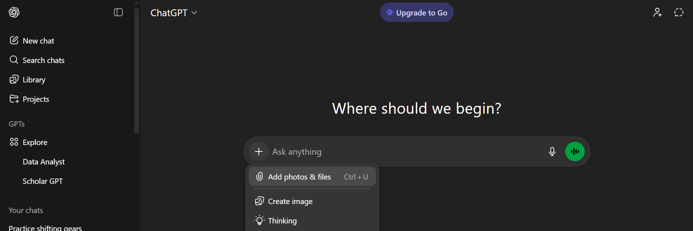

.png)
With the rapid rise of AI in everyday workflows, many routine tasks have become faster and more efficient; from note-taking and summarization to web scraping and automation.
AI now plays an essential role in saving time, and allowing individuals and businesses to focus on what truly matters. Its impact continues to expand across industries, providing accessible solutions to challenges that once required significant manual effort.
Data analysis is no exception. Modern AI tools can now analyze datasets, uncover patterns, and generate meaningful insights with impressive accuracy. And this isn’t limited to simple summaries, AI is capable of performing real, in-depth analysis, including statistical modeling, data visualization, forecasting, and even machine learning. What once required specialized knowledge, you can now achieve with a few prompts.
For small businesses, this means they no longer need to hire a dedicated data analyst to understand their numbers. Larger organizations can also reduce repetitive analytical workload and free their data teams for higher-value tasks. By simply uploading or connecting your data into these tools, you can receive clear, actionable insights that drive better decisions and improved outcomes.
In this article, you’ll discover a variety of AI tools currently available for data analysis, how each one works, and the types of use cases they’re best suited for. I’ve personally tested these tools, and they’re already being used by many businesses worldwide. My goal is to introduce you to them so you can explore their potential and see how they can streamline your own data workflows.
Best AI Data Analysis Tools to Try
Here are some the AI Data Analysis tools you should try;
1. ChatGPT
One of the most widely recognized AI tools today is ChatGPT, known for sparking much of the modern AI revolution. Recently, ChatGPT introduced a feature that allows users to upload data files and perform analysis directly within the chat interface.
The system automatically generates Python code to process your data and provides clear interpretations of the results, making data analysis accessible even to users without technical backgrounds.
To get started, simply click the plus icon in the interface and upload your file, whether it’s a CSV or JSON. Once the file is added, you can ask any question about the data, such as identifying trends, summarizing statistics, or creating visualizations. ChatGPT handles the underlying code and computation, allowing you to focus solely on the insights.
However, the tool does come with certain limitations. It currently doesn’t support direct connections to databases, data warehouses, or other large-scale storage systems. This means it’s best suited for smaller datasets, such as Spreadsheets, survey responses, or exported reports. Despite these constraints, ChatGPT remains an excellent option for quick, intuitive, and on-the-fly analysis of manageable datasets.

2. LearnFacebookAdsInsights
Although this tool is designed for a very specific use case; analyzing Facebook Ads Insights, it remains highly valuable, especially for marketing agencies and e-commerce businesses.
Its focused purpose makes it exceptionally powerful for extracting meaningful insights from Facebook advertising data, helping teams understand campaign performance, optimize budgets, and drive better ROI.
With LearnFacebookAdsInsights, users can seamlessly pull Facebook Ads data directly into Google Sheets, making it easy to integrate insights into existing reporting workflows.
From there, the platform can connect to various dashboards or be analyzed through its built-in AI Chat Assistant. This assistant can generate summary tables, create visualizations, and perform both simple and advanced statistical analysis, giving marketers a deeper understanding of trends and performance drivers.
The main limitation of the tool is its narrow scope: it is designed exclusively for Facebook Ads Insights. This means it cannot be used to analyze other data sources. However, for teams whose core focus is optimizing Facebook ad campaigns, LearnFacebookAdsInsights remains a highly effective and specialized solution.

3. Julius AI
Julius AI is a powerful analytics platform renowned for its accuracy in both standard data analysis and advanced statistical modeling. It has become a popular choice among researchers, academics, and data professionals worldwide due to its reliability and depth of analytical capabilities.
If you’re conducting exploratory analysis, running complex regressions, or working with experimental data, Julius AI provides precise and transparent results.
The platform offers a variety of connectors, making it easy to integrate your data from multiple sources. Even on its free tier, Julius AI allows you to connect to Google Drive and send up to 15 messages per month at no cost. This makes it accessible for students, small teams, and individuals who need robust analytical tools without committing to a paid plan.
Its design focuses heavily on clarity: alongside the results, Julius AI provides the exact Python or R code used in the analysis, helping users learn, verify methods, or reproduce findings.
Julius AI also supports the creation of custom AI agents, enabling users to automate recurring tasks and optimize their workflows. It integrates seamlessly with major big-data platforms such as Google BigQuery, Snowflake, and other enterprise data warehouses.
Collaboration is another key strength of the platform, its real-time, multi-user editing allows teams to work together on shared analytical projects. You can also push insights directly to Slack channels, making it easy to keep stakeholders informed and maintain alignment across teams.

4. Bag of Words
Bag of Words (BOW) is an AI-powered analytics tool that enables users to build BI dashboards simply by using natural language prompts. Instead of manually configuring charts or writing SQL queries, you can describe the insights you want, and BOW automatically generates visualizations.
Users can drag, resize, and arrange these visuals on the dashboard, offering a flexible and interactive way to explore your data. Users can also easily add or remove visual components, making it simple to tailor dashboards to evolving business needs.
BOW supports a wide range of data sources, including Salesforce, DBT, Postgres, and many others. This broad integration capability allows teams to connect their existing workflows and unify data from multiple systems.
Additionally, BOW enables seamless collaboration by allowing you to send insights directly to Slack and share dashboards with colleagues. This ensures insights are easily accessible and encourages data-driven decision-making across the organization.
As an open-source platform, BOW gives organizations full control over deployment and customization. You can run it locally or in your own cloud environment, as long as you provide valid API keys from services such as Google, OpenAI, Azure, or Anthropic. This flexibility makes BOW suitable for teams that want the power of AI-driven analytics while maintaining transparency, security, and ownership of their data infrastructure.

5. PandasAI
While Pandas remains one of the most popular libraries for data wrangling and analysis in Python, PandasAI is an open-source extension that simplifies the analysis process even further by integrating natural language and AI-powered capabilities directly into Pandas workflows.
With PandasAI, users don’t need to write extensive boilerplate code to explore or analyze a DataFrame. Instead, they can provide a plain-language prompt, attach their dataset, and execute commands that automatically generate results, insights, or even visualizations.
PandasAI is particularly well-suited for developers, data scientists, and analysts who want to introduce AI-driven analysis into their existing data pipelines without replacing their current toolset.
In addition to working with Pandas DataFrames, it also allows users to connect to databases, work with external data sources via extensions, and even build custom AI agents for more advanced or repeatable analytics tasks. This flexibility makes it a powerful addition for teams seeking intelligent automation in data exploration, reporting, and decision-making processes.
However, one notable limitation is that PandasAI still requires some level of coding knowledge to use effectively. Users must be comfortable working in a Python environment and managing dependencies in order to benefit from its full capabilities.
That said, developers can easily build applications, scripts, or user interfaces on top of PandasAI, making its functionality more accessible to non-technical users such as business analysts, product managers, or marketers through simplified dashboards or internal tools.
Overall, PandasAI bridges the gap between traditional programmatic data analysis and modern AI-assisted workflows, making it a valuable tool for anyone who wants to combine the power of Pandas with the efficiency of natural language interaction.

6. Annie
Annie; developed by the creators of PandasAI, is designed to make dashboard creation simple and intuitive for businesses. It supports a wide range of data sources, including Google Sheets, Google Analytics, HubSpot, and many others, allowing users to consolidate insights from multiple platforms into clean, interactive dashboards. Its user-friendly interface makes it accessible even for teams without deep technical expertise.
Upon signing up, Annie provides 100 free credits, which allows you to create up to ten dashboards. This trial capacity is generally enough to evaluate whether the platform fits your workflow and analytical needs. While PandasAI is open source, Annie itself is not, which may be a concern for organizations that require full transparency or prefer self-hosted, fully auditable solutions.
Beyond dashboard creation, Annie also enables conversational data analysis. Users can chat directly with their data, ask questions, generate insights, and push important findings to Slack for team visibility. This combination of dashboarding, AI-assisted exploration, and collaboration features makes Annie a versatile tool for modern data-driven teams.

7. Vertex AI
Vertex AI is Google Cloud’s unified artificial intelligence and machine learning platform, designed to streamline the entire ML lifecycle; from data preparation and training to deployment and monitoring.
One of its most powerful features is its support for AutoML, which allows users to automatically build high-quality custom machine learning models without extensive coding or deep ML expertise.
By leveraging Google’s large-scale computing infrastructure, Vertex AI can efficiently process massive datasets and search through a wide range of model architectures to identify the most effective solution for your specific problem.
Beyond automated model selection, Vertex AI also provides tools for hyperparameter tuning, model evaluation and explanation. These capabilities help teams better understand how their models make predictions and ensure that the final output is both accurate and trustworthy.
Developers can take advantage of built-in dashboards, experiment tracking, and integrated versioning to maintain clear oversight over the entire modeling process. This makes Vertex AI suitable not only for rapid prototyping but also for enterprise-level machine learning pipelines.
Another advantage of Vertex AI is its seamless integration with the rest of the Google Cloud ecosystem. If you’re pulling data from BigQuery, orchestrating pipelines with Vertex Pipelines, or deploying models to real-time endpoints, the platform offers an end-to-end workflow with strong scalability and reliability. This allows organizations to move from raw data to production-ready ML systems more quickly and efficiently, reducing the operational burden while maximizing performance. Ultimately, Vertex AI empowers teams to build, manage, and deploy machine learning models at scale with significantly less manual effort.

8. Sigma AI Browser
Although Sigma AI functions as a browser, it is far more than a traditional web tool, it is an AI-powered, agentic browser designed to both gather and analyze data.
Unlike other analytics platforms, Sigma AI can actively scrape information from websites, allowing it to serve as both a data source and a data analysis tool. This makes it particularly useful for users who need to collect real-time information from the web before running their analysis.
Sigma AI also supports connecting to various cloud storage solutions, enabling users to import and clean their existing datasets, conduct analysis, and generate comprehensive reports, all within the same environment. This end-to-end workflow provides a streamlined experience for handling small to medium-sized data projects without switching between multiple tools.
However, its limitations become clear when dealing with large-scale data. Sigma AI does not support connections to major big-data platforms or data warehouses, which restricts its use to smaller datasets and lightweight analytic tasks. Despite this, it remains a powerful option for quick analysis, web scraping needs, and compact reporting workflows.

9. Fellou.ai
Fellou is another powerful agentic browser designed to help users automate data collection and analysis at scale. It can scrape and aggregate information from a wide range of online sources, including product reviews, blog posts, news sites, forums, and social media platforms.
Once the data is gathered, Fellou allows you to organize, visualize, and interpret it by creating interactive dashboards, summaries, and reports, eliminating much of the manual effort traditionally required in research and analytics.
One of Fellou’s standout features is its proprietary framework, Eko, which enables users to build custom AI agents tailored to specific data analysis workflows or use cases. You can train these agents to follow predefined routines such as monitoring trends, comparing competitors, tracking customer sentiment, or generating periodic insights. This makes Fellou particularly useful for product managers, marketers, researchers, founders, and data analysts who need recurring or specialized data intelligence.
On its free plan, users can run up to four tasks and set up two scheduled (automated) tasks, which is sufficient for light experimentation or small, targeted projects. Even with this limitation, Fellou remains highly effective for prototype-level research or one-off analysis.
What truly makes Fellou powerful is its prompt-driven workflow. You can simply describe what you want in natural language, and Fellou will automatically determine the data sources, gather the relevant information, analyze it, and present the findings in a structured report.
For instance, you could prompt Fellou to “analyze LinkedIn job descriptions for AI Product Manager roles, focusing on required skills, years of experience, tools, and hiring trends.” Based on that instruction, it will search for relevant job postings, extract and categorize key information, and return a detailed summary of current industry demand, emerging skills, and noticeable patterns in hiring.
This level of automation turns Fellou into more than just a browser, it acts as an intelligent research assistant capable of performing complex data analysis tasks that would otherwise take hours or days to complete manually.

10. Data Formulator
Data Formulator, developed by Microsoft Research, is an AI-powered tool focused primarily on exploratory data analysis and data visualization. It is designed to help users transform raw data into meaningful, visually compelling charts with minimal manual configuration. Users can connect Data Formulator to both databases and cloud storage folders, making it easy to work with structured data from a wide variety of sources.
One of its most innovative features is its prompt-based interaction model. Instead of manually configuring fields, axes, and filters as in traditional BI tools, you can simply describe the type of visualization you want in natural language. For example, you might prompt: “Show a line chart of monthly revenue growth for the past two years, broken down by region.” The tool then intelligently determines which variables to use, how they should be mapped, and what type of chart best represents your request.
Alternatively, users can start with a set of pre-built visual templates. From there, the app automatically suggests the most appropriate variables and relationships in the dataset, making it more approachable even for users who don’t have advanced data visualization experience.
At the moment, the online version of Data Formulator is limited in functionality, and running it locally may require some technical knowledge, including familiarity with development environments and configuration steps. Despite these early limitations, it is an incredibly promising and capable tool for data exploration and rapid insight generation.
Another major advantage is its flexibility with AI models. Users can bring their own existing AI API key (such as an OpenAI-compatible key) and integrate it directly into the application, making it easier to control model usage, scale, and costs.
Overall, Data Formulator stands out as a highly effective and forward-thinking solution for analysts, researchers, and data-driven teams who want to speed up both the discovery and visual storytelling phases of data analysis.

How to Choose the Right AI Analysis Tool
When choosing an AI tool for data analysis, you might have to look at a number of considerations and see if the AI tool will serve your use case. Here are what you should consider:
- Data Size: Can the AI tool handle big amount of data? This is a question you should ask yourself. Some AI data analysis tools are meant for small files like CSV uploads or Spreadsheets like ChatGPT, while others can connect to data warehouses like Bag of Words and Vertex AI.
- Skill Level: You need to also know if the AI data analysis tool requires coding knowledge, some requires you to have a knowledge of programming to use. If you are not a developer, such AI data analysis tool might not suit your use case and you will have to look for no-code alternatives.
- Budget and Infrastructure: Most AI data analysis tools are paid, except for the ones which you can deploy and host locally. You might have to compare your budget against various AI tools and see the one that is affordable without having to break the bank.
- Deployment Needs: Some AI tools are already available to use as a web application, while others might need deployment to use. If you have technical knowledge of deployment using various platforms, you can opt for self deployed options, otherwise it’s just best to use those with already deployed web applications.
| AI Tool | Data Size | Skill level | Budget | Deployment |
|---|---|---|---|---|
| ChatGPT | Small | Easy | Free but limited | Not needed |
| LearnFacebookAdsInsights | Large | Easy | Paid | Not needed |
| Julius AI | Large | Easy | Free but limited | Not needed |
| Bag of Words | Large | Easy | Free but Self host needed | Needed |
| PandasAI | Large | Advanced | Free | Needed |
| Annie | Large | Easy | Free but limited | Not needed |
| Vertex AI | Large | Advanced | Paid | Needed |
| Sigma AI | Small | Easy | Free but limited | Not needed |
| Fellou.ai | Small | Easy | Free but limited | Not needed |
| Data Formulator | Large | Easy | Free but Self host needed | Needed |
Conclusion
AI tools accelerate insights and decision making, and as a small business you don’t need to employ a data analyst to help analyze your data or make findings from it. Data Analyst in big businesses can also delegate repetitive analytical tasks to AI tools, while focusing on much more important tasks.
Your choice of AI tools depends on your use case; you can go for self hosted tools if you are more concerned about privacy, or go for the ones that are easy to use if you don’t have self hosting or deployment knowledge. Which ever way, they all serve the same purpose; to make sense of your data.
I will encourage you to try all of them, and experiment their strengths and weaknesses to see the one that will best serve your use cases. I hope you find this article useful, don’t forget to check out 10 best AI browsers to see which browser you are actually missing on.
Need Help with Data? Let’s Make It Simple.
At LearnData.xyz, we’re here to help you solve tough data challenges and make sense of your numbers. Whether you need custom data science solutions or hands-on training to upskill your team, we’ve got your back.
📧 Shoot us an email at admin@learndata.xyz—let’s chat about how we can help you make smarter decisions with your data.